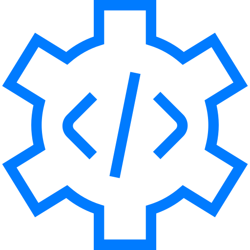
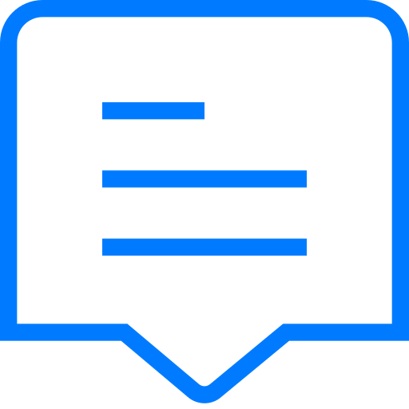

HUB URBANO DIGITAL: CONECTA, OPTIMIZA, CRECE.
Tu epicentro para la vida moderna. Herramientas inteligentes, insights clave y soluciones eficientes para el pulso de la ciudad.
SOLUCIONES PARA EL RITMO URBANO

EFICIENCIA CONECTADA
En el corazón de nuestro hub, la eficiencia es clave. Exploramos las metodologías y herramientas que te permiten maximizar tu productividad en un entorno urbano dinámico. Descubre cómo la tecnología puede ser tu aliada para simplificar procesos, tomar decisiones informadas y liberar tiempo para lo que realmente importa.
ANÁLISIS PROSPECTIVO
Mantente a la vanguardia con nuestros análisis y reportes sobre las tendencias que están redefiniendo la ciudad. Desde la economía digital hasta la movilidad inteligente, ofrecemos una visión clara del futuro urbano. Nuestros expertos desglosan la información compleja en insights accionables, permitiéndote anticipar cambios, identificar oportunidades y navegar el panorama urbano con confianza.

RED URBANA
Conecta con una red de profesionales, emprendedores y visionarios que comparten tus intereses. Nuestro hub es un espacio para colaborar, aprender y crecer juntos en el ecosistema urbano. Participa en discusiones, eventos virtuales y grupos de trabajo que te permitirán expandir tus horizontes y forjar alianzas estratégicas.
HISTORIAS DE IMPACTO: TRANSFORMANDO LA CIUDAD
"Gracias a las herramientas de gestión de proyectos del Hub, mi startup duplicó su eficiencia en 3 meses."
— Ana M., CEO de TechSolutions.
"Los reportes de tendencias me permitieron identificar una nueva oportunidad de mercado antes que mi competencia."
— Carlos R., Consultor de Negocios.
"Encontré a mi co-fundador en un evento de networking del Hub. ¡Una conexión invaluable!"